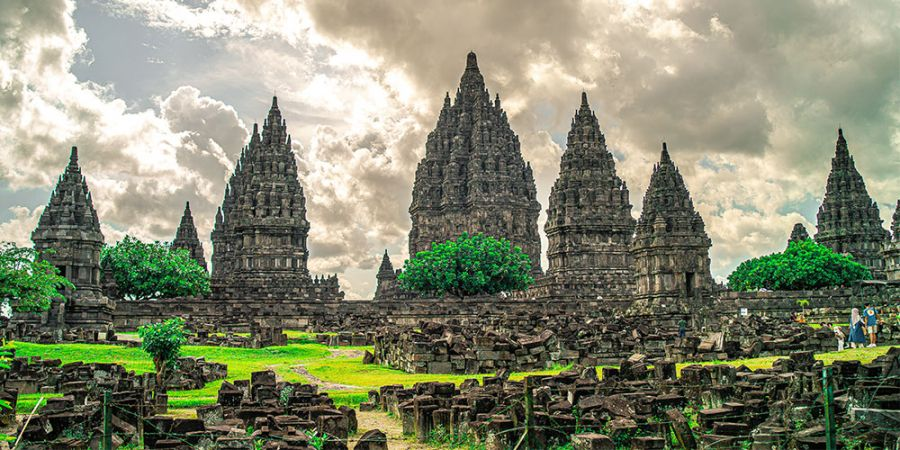
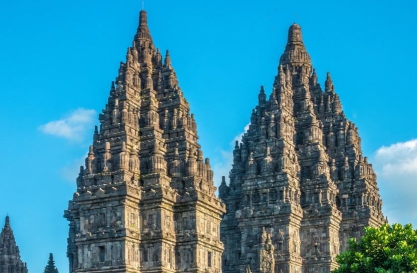
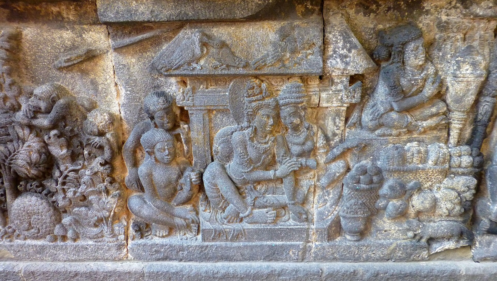
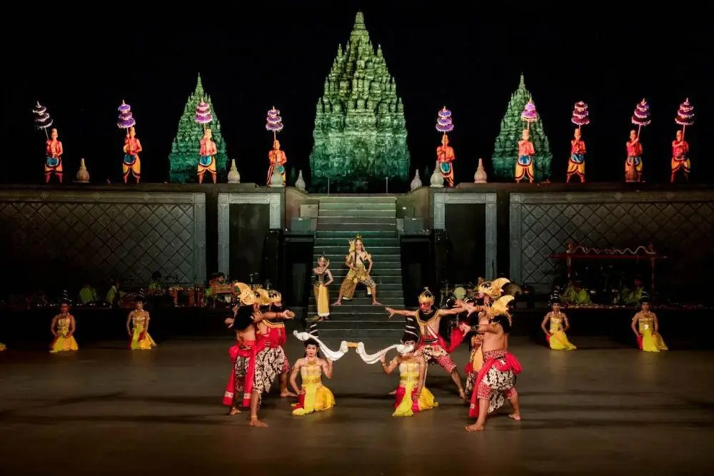

Zona 1: Halaman Luar (Jaba)
Zona terluas yang mengelilingi kompleks candi. Dahulu, area ini menjadi ruang transisi bagi para peziarah sebelum memasuki kawasan yang lebih suci.
WISATA SEJARAH INDONESIA
Mengenal keindahan arsitektur, kisah legenda, dan warisan budaya yang menjadi kebanggaan Indonesia.
Mulai Jelajahi ↗Abad ke-9
Jejak sejarah yang abadiMENGENAL DESTINASI
Bukan sekadar bangunan bersejarah, tetapi juga bagian dari perjalanan budaya Indonesia.
Sejarah dan Budaya
Candi Prambanan merupakan kompleks candi Hindu terbesar di Indonesia yang dibangun pada abad ke-9 Masehi. Candi ini juga dikenal dengan nama Rara Jonggrang dan dipersembahkan untuk Trimurti, yaitu tiga dewa utama dalam agama Hindu. Ketiga dewa tersebut adalah Brahma sebagai dewa pencipta, Wisnu sebagai dewa pemelihara, dan Siwa sebagai dewa pemusnah. Berdasarkan Prasasti Siwagrha, nama asli kompleks candi ini adalah Siwagrha yang berarti “Rumah Siwa”.
Pembangunan Candi Prambanan diperkirakan dimulai sekitar tahun 850 Masehi pada masa pemerintahan Rakai Pikatan, kemudian dilanjutkan dan diperluas oleh Balitung Maha Sambu pada masa Kerajaan Medang Mataram. Kompleks candi ini terletak di perbatasan Daerah Istimewa Yogyakarta dan Jawa Tengah. Candi Siwa menjadi bangunan utama dengan tinggi mencapai 47 meter. Dengan arsitektur yang tinggi dan ramping, Candi Prambanan menjadi salah satu kompleks candi paling megah di Asia Tenggara dan ditetapkan sebagai Situs Warisan Dunia UNESCO.
Pelajari sejarahnya disini ↗MENGENAL KOMPLEKS CANDI
Kompleks Candi Prambanan terbagi menjadi tiga zona dengan fungsi dan karakteristik yang berbeda.
Zona terluas yang mengelilingi kompleks candi. Dahulu, area ini menjadi ruang transisi bagi para peziarah sebelum memasuki kawasan yang lebih suci.
Pelataran ini dahulu dipenuhi candi perwara yang mengelilingi halaman tengah. Sisa-sisa reruntuhannya menunjukkan luas dan tata ruang kompleks Prambanan.
Zona paling suci yang menjadi pusat kompleks candi. Di area ini berdiri tiga candi utama, yaitu Candi Siwa, Candi Brahma, dan Candi Wisnu.
YANG MENARIK UNTUK DIJELAJAHI
Tiga hal yang membuat Prambanan istimewa untuk dikenali lebih dekat.
ARSITEKTUR
Bentuk bangunan yang menjulang dan susunan batu yang detail menjadi bukti keahlian arsitektur pada masa lampau.
SENI DAN SEJARAH
Relief pada dinding candi menggambarkan bagian dari kisah Ramayana yang menarik untuk dipelajari sebagai warisan seni budaya.
PERTUNJUKAN
Pertunjukan yang menggabungkan tari, musik, dan drama untuk menyampaikan kisah Ramayana melalui seni pertunjukan.
RENCANAKAN KUNJUNGANMU
Beberapa informasi yang perlu diketahui sebelum menjelajahi Candi Prambanan.
Jl. Raya Solo - Yogyakarta, Kranggan, Bokoharjo, Kec. Prambanan, Kabupaten Sleman, Daerah Istimewa Yogyakarta 55571
• Jam Operasional Wisata Candi: Pukul 06:30 – 17:00 WIB (Pintu masuk/loket reguler).
• Hari Tutup Area Halaman Candi: Hari Senin pengunjung tidak diperbolehkan masuk ke halaman candi.
Datang pada pagi atau sore hari, gunakan sepatu yang nyaman, dan jangan lupa bawa payung, air minum, dan sunscreen.
POTRET WARISAN BUDAYA
Melihat keindahan Prambanan melalui berbagai sudut dan detailnya.

01
02
03
04